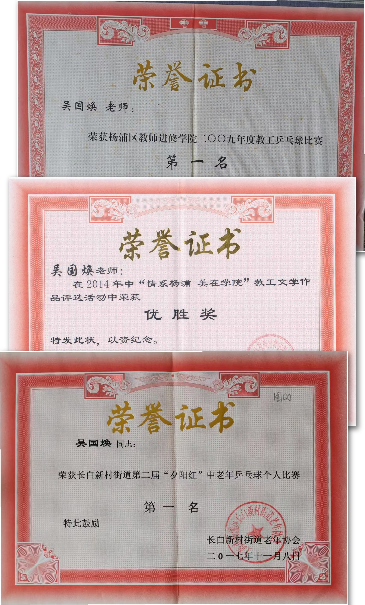

近年来，杨教院喜事连连。
学院易址重建、校园环境焕然一新；全院努力多年、终得正果，被评为 “市文明单位”；最近，又被市教委认定为“上海市示范性县级教师培训机构”，学院的各项工作搞得风声水起。
我觉得，学院还有一抹不可忽略的亮色，那就是开展生动活泼的群体活动。
学院每年都要举行教工运动会，还组织教工参加校内、局内、街道和区里的各种运动比赛。这些活动活络了筋骨、愉悦了身心、促进了友谊、增强了凝聚力。
我虽退休，但是回忆起来，还是那样的温馨、有趣。就像小时候玩过的特别开心的游戏、吃过的特别好吃的美食一样，一直不会忘怀。
教工运动会的点点滴滴，仿佛就在眼前。现在略举一、二，与大家分享，还是那样的兴致盎然。
先说说“一分钟投篮”。
这个比赛，首先氛围就够热烈的。一溜人排成半圆状，围着篮球架。一个个轮流跑到篮下，每人一分钟，看看谁投进篮筐的球多。一个好球，会引来阵阵的喝彩；一个球不进，也会带出连连的惋惜。
我掌握了这项比赛的诀窍：为了提高进球的频率，需要缩短从球出手到接回的时间。这样人的动作要稳定、协调，人与篮球架的距离是越近越好，而且人的站位要相对固定；为了提高球的命中率，最好能使篮球轻轻擦板进入篮筐。
所以，每次比赛，我的成绩都不错。一直在旁仔细观察的青年教师小李轻轻地感叹：“哦，这个篮球，还能这个样子来投啊！”。果然， 悟性极高的他，马上掌握了窍门，在第二年的投篮比赛中，脱颖而出，进球的个数超过了我。幸运的是，第二年的比赛规则有所修改，分成了青年和中老年两组。这样我就蝉联了冠军。
再说说那次学院教工乒乓比赛，院领导和工会真是动了不少脑筋、花费了不少精力。他们先到杨浦职业学校借好了场地，每周固定时间，组织教工去练习，锻炼，这是热身阶段。到了比赛阶段，仿照正规的乒乓比赛：也分小组赛和淘汰赛来进行，正是像模像样。
我自小喜欢乒乓，自然是个积极的参与者。
淘汰赛开始了，我的第一个对手是向院长（时任院长）。我想，这一定是工会组织者的刻意安排：因为我被认为是夺冠的热门人选，而向院长是学院的主要领导，这样的比赛更能营造气氛、吸引眼球。果然，不少老师饶有兴趣的前来观看比赛。
院长平时公务繁忙、鲜有时间练习、球技显得生疏，但打起球来却一板一眼、不慌不忙、显得心定气闲。我发现他削球有两下子，便尽量把球打到他能削得比较舒服的地方，他也就势摆出POSE，左一下、右一下地把球削起来，两人一来一往，引得观战者喝彩、哄笑声不断……
比赛结束，“裁判”居然拿出“乒乓比赛记分表”，让 “运动员”签字确认。哈哈，一切都“像真的一样”。
到了决赛，对手是张副院长。张老师手持横拍，平时训练有素，左右两面都能起板扣杀。尤其是发球很有一手，既转又刁，我一点不敢怠慢。经过一番激烈的争夺，我终于如愿以偿赢得了冠军。
午饭时，食堂里贴出了“乒乓比赛对阵表”，公布了比赛的结果。每个用餐的老师，都要凑近眼睛看一看。这时候，忽然像小时候名字上了光荣榜一样，心里涌起一阵喜悦、得意 ……
运动场上，可以看到平时繁忙工作带来紧张情绪的充分释放；运动场上，可以听到老师们孩童般的畅怀大笑。
我还记得那次教工运动会后，我和同办公室的两位青年教师小孙、小白捧着大摞的奖品回来，满面春风、一路笑声。小孙打趣道：“这次运动会，一大半奖品都被我们办公室拿了！”，我也忽然觉得好像身上注满了活力、顿时年轻了好多。
我运动，我快乐。这是学院的群体活动给我们带来的。
祝学院的群体活动越搞越好！
（本文在杨教院“情系杨浦 美在学院”教工文学作品评选活动中获得优胜奖，刊登在 2014年9月《杨浦教师进修学院院报》）
